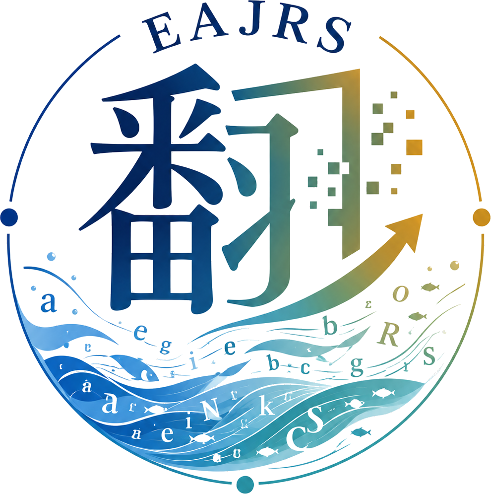

キックオフ・クロストーク
ローマ字表記と分かち書きを、図書館・研究・システムの視点から横断的に議論。キックオフイベント：ラウンドテーブルディスカッション「なぜ今、日本語のローマ字表記と分かち書きなのか？」
お申し込みフォーム

翻字のその先へ EAJRS CrossTalk SessionEAJRS CrossTalk Session
メタデータにおける
日本語のローマ字表記と分かち書き
日本語資料を世界へつなぐために、ローマ字表記、分かち書き、検索・発見性、 そしてメタデータの相互運用性を横断して考えるクロストークセッションです。
Activities
イベント、議論、事例共有を通じて、現場の課題を共同で整理します。
ローマ字表記と分かち書きを、図書館・研究・システムの視点から横断的に議論。キックオフイベント：ラウンドテーブルディスカッション「なぜ今、日本語のローマ字表記と分かち書きなのか？」
お申し込みフォーム
各機関の目録・ディスカバリー・デジタルコレクションの事例を紹介。
議論から見えてきた論点、用語、参考資料を継続的に蓄積。
Resources
セッションで扱う論点を、実務で参照しやすい形にまとめます。
日本語のローマ字表記に関する規則、事例、比較資料。
View resources →分かち書きの判断、検索語との関係、実装上の論点。
View resources →目録・典拠・識別子・相互運用性に関する実践資料。
View resources →Links
EAJRS、およびセッションに関連する外部リソースへの入口です。